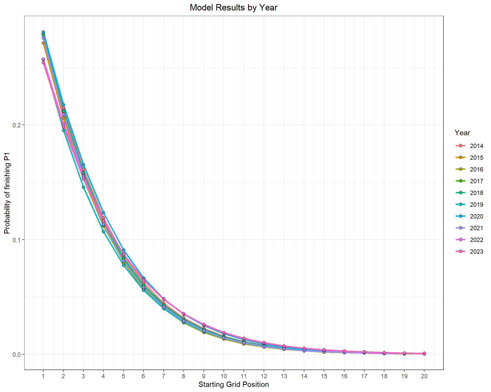
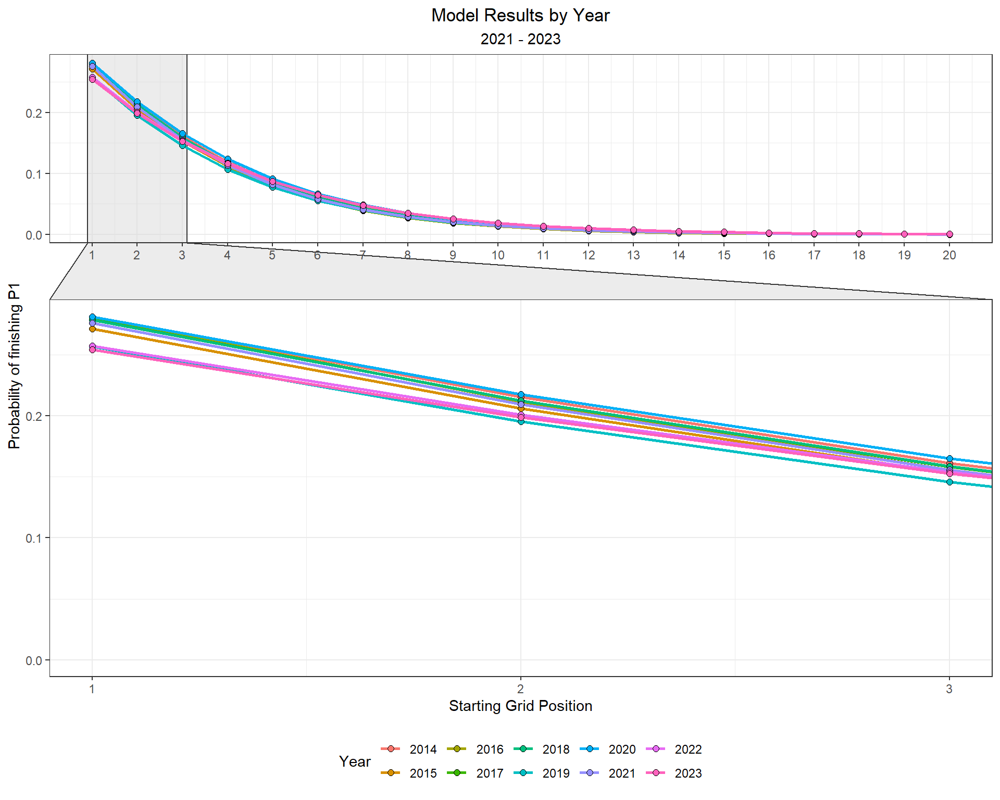
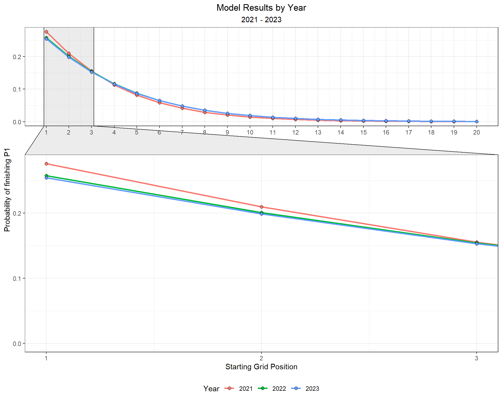

Chapter 6 Exploratory Data Analysis and Modeling
What determines success in a Grand Prix? Obviously, a multitude of factors do, but which ones specifically, and how much? That’s what I am aiming to answer with this book.
Let’s begin with a mostly uncontroversial statement: All other factors held constant, it is best to start the race in first place! How much does starting position influence a driver’s finishing place? We can explore the data and build a model to answer this.
6.1 Plot overall trend: Starting Position vs Finish Position
Our dataset contains starting grid position and finishing place for each race from 2016 to 2022. Below, I’ll plot starting grid position vs finishing position for each driver over this seven year period. I’ll include a best-fit line to highlight the overall relationship.
# Pull Race Data
races2023 <- race_result_scraper(2023)
races2022 <- race_result_scraper(2022)
races2021 <- race_result_scraper(2021)
races2020 <- race_result_scraper(2020)
races2019 <- race_result_scraper(2019)
races2018 <- race_result_scraper(2018)
races2017 <- race_result_scraper(2017)
races2016 <- race_result_scraper(2016)
races2015 <- race_result_scraper(2015)
races2014 <- race_result_scraper(2014)
# Combine all race data
races_allyears <- rbind(races2023,
races2022,
races2021,
races2020,
races2019,
races2018,
races2017,
races2016,
races2015,
races2014)
# Pull Starting Grid Data
grid2023 <- starting_grid_scraper(2023)
grid2022 <- starting_grid_scraper(2022)
grid2021 <- starting_grid_scraper(2021)
grid2020 <- starting_grid_scraper(2020)
grid2019 <- starting_grid_scraper(2019)
grid2018 <- starting_grid_scraper(2018)
grid2017 <- starting_grid_scraper(2017)
grid2016 <- starting_grid_scraper(2016)
grid2015 <- starting_grid_scraper(2015)
grid2014 <- starting_grid_scraper(2014)
# Combine all starting grid data
grid_allyears <- rbind(grid2023,
grid2022,
grid2021,
grid2020,
grid2019,
grid2018,
grid2017,
grid2016,
grid2015,
grid2014)Here, I’ll merge the grid positions with the race results for all Grands Prix from 2014 to 2023.
## Merge practice and qualifying data
grids_and_races <- races_allyears %>%
left_join(grid_allyears %>% dplyr::select(Driver, Race, Circuit, Year, Position, Time_secs),
by = c('Driver', 'Race', 'Circuit', 'Year'),
suffix = c("_race", "_grid")) %>%
filter(!Position_race %in% c("NC", "DQ")) %>%
mutate(Position_race = as.numeric(Position_race),
Position_grid = as.numeric(Position_grid)) grids_and_races %>%
ggplot(aes(Position_grid, Position_race)) +
geom_point(position = position_jitter(), alpha = 0.25) +
geom_line(stat = 'smooth', se = F, method = 'lm', col = 'red',
formula = y ~ 0 + x, size = 1, alpha = 0.75) +
theme_bw() +
labs(x = 'Starting Grid Position',
y = 'Finishing Position',
title = 'Starting Position vs Finish Position',
subtitle = 'All Grands Prix: (2016 - 2022)') +
theme(plot.title = element_text(hjust = 0.5),
plot.subtitle = element_text(hjust = 0.5))6.1.1 Overall model
There is certainly a pattern in the data; starting and finishing positions are positively correlated. How much does starting position influence the finishing position of a driver? We need to be as explicit as possible in this research question, because that will guide our model choice and ultimate interpretation of the results. I’ll give it my best shot to clearly state my research question below:
What effect does starting grid position have on the probability of a finishing position in a Grand Prix?
What model allows us to answer this question? Because the response variable is ordered (1st place, 2nd place, etc.), a proportional odds model, or ordinal regression model, is an obvious choice.
What is an Ordinal Regression model?
An Ordinal Regression model uses a response variable that is an ordered factor. For example, “Low/Medium/High” or “Bad/Good/Great” are both ordered factors with three levels. Finishing Place, “P1, P2, P3, etc.”, is also an ordered factor. If we are interested in understanding the probability of a driver finishing in a given position, an Ordinal Regression is an ideal model choice.
Below, I’ll build an ordinal regression modeol, or a proportional odds model, to estimate the effect of starting grid position on the odds of a particular finishing position. This model will utilize all races across the seven year period (2016 to 2022).
library(VGAM)
overall_model <- vglm(Position_race ~ Position_grid,
family = cumulative(parallel = T, reverse = F),
data = grids_and_races)
exp(coef(overall_model))## (Intercept):1 (Intercept):2 (Intercept):3 (Intercept):4 (Intercept):5 (Intercept):6
## 5.251639e-01 1.390002e+00 2.779530e+00 4.946141e+00 8.283053e+00 1.335696e+01
## (Intercept):7 (Intercept):8 (Intercept):9 (Intercept):10 (Intercept):11 (Intercept):12
## 2.103747e+01 3.258116e+01 5.030764e+01 7.746446e+01 1.189627e+02 1.837928e+02
## (Intercept):13 (Intercept):14 (Intercept):15 (Intercept):16 (Intercept):17 (Intercept):18
## 2.889453e+02 4.695064e+02 8.025183e+02 1.448913e+03 3.072870e+03 7.502012e+03
## (Intercept):19 (Intercept):20 (Intercept):21 Position_grid
## 2.188651e+04 7.977022e+04 2.817311e+05 7.056819e-01There is a coefficient estimate for each predictor variable (i.e starting grid position). We would interpret these coefficients, after exponentiation, as:
If a driver starts from the front of the grid (i.e P1), there is a 22% decrease in the odds of finishing at a given position or better.
Or…
For drivers who start a race from P3, the odds of finishing P1 vs the top 2 positions are 0.21 lower.
The interpretation of the coefficients are not super intuitive. They make sense, but it takes some effort to sort out.
Another way to articulate this model’s results is by making predictions with the model. Below, I’ll simulate a starting grid, and make predictions for finishing place. Predicted finishing position will include a 95% confidence interval.
# Create a placeholder dataframe with all possible starting positions
starting_grid = data.frame(Position_grid = 1:20)
# Create a placeholder dataframe with names for predictions and standard errors.
placing_df <- data.frame(prob = rep('prob', 21)) %>%
mutate(y = 1:n()) %>%
unite(prob, prob, y, remove = F) %>%
mutate(se = rep('se', 21)) %>%
unite(se, se, y, remove = F)
# Make Predictions for each Finishing position (1:20), using each Starting Position (1:20)
predictions <- as.data.frame(predictvglm(overall_model, newdata = starting_grid, se.fit = T)$fitted.values)
# rename the columns
names(predictions) <- placing_df$prob
# Extract the standard error for each prediction
standard_errors <- as.data.frame(predictvglm(overall_model, newdata = starting_grid, se.fit = T)$se.fit)
# rename the standard error
names(standard_errors) <- placing_df$se
## As an example, I'll select the predictions and standard error for: Probability(P1 finish | P1 starting grid)
# Bind the predictions and standard errors together, and convert the odds to probabilities.
starting_grid_coef_finish1 <- starting_grid %>%
bind_cols(pr_1 = predictions$prob_1,
se_1 = standard_errors$se_1) %>%
mutate(pr = exp(pr_1),
lower = exp(pr_1 - se_1 * 1.96),
upper = exp(pr_1 + se_1 * 1.96)) %>%
mutate( pr = pr / (1 + pr),
lower = lower / (1 + lower),
upper = upper / (1 + upper))Now that the predictions are made, I’ll plot the Probability of winning a race given each potential starting position, P(P1 finish | a starting grid):
starting_grid_coef_finish1 %>%
ggplot(aes(Position_grid, y = pr, ymin = lower, ymax = upper)) +
geom_pointrange() +
theme_bw() +
labs( y = 'Probability of finishing P1',
x = 'Starting Grid Position')
If starting from P1, a driver has a 27% chance of winning the race, on average. If starting from P2, but still on the front row, a driver’s chance of winning drops to 21%.
6.1.2 What is the probability of finishing on the podium?
We can use the same approach to estimate the probability of a podium given a starting grid position.
## As an example, I'll select the predictions and standard error for: Probability(Podium | a starting grid)
# Bind the predictions and standard errors together, and convert the odds to probabilities.
starting_grid_coef_podium <- starting_grid %>%
bind_cols(pr_1 = predictions$prob_3,
se_1 = standard_errors$se_3) %>%
mutate(pr = exp(pr_1),
lower = exp(pr_1 - se_1 * 1.96),
upper = exp(pr_1 + se_1 * 1.96)) %>%
mutate( pr = pr / (1 + pr),
lower = lower / (1 + lower),
upper = upper / (1 + upper))
starting_grid_coef_podium %>%
ggplot(aes(Position_grid, y = pr, ymin = lower, ymax = upper)) +
geom_pointrange() +
theme_bw() +
labs( y = 'Probability of a podium',
x = 'Starting Grid Position')A driver starting from P1 has a 66% chance of finishing on the podium. I like those odds! A driver starting from P5 still has a 1 in 3 chance of finishing on the podium.
6.1.2.1 Prediction Grid
What if we wanted to know the probability of each Finish Position, given each starting position? I’ll plot in a heat map below. Each tile represents the Probability(a finishing position | a starting grid position).
First, I’ll need to re-shape the dataframe to a long format indexed by starting and finish position. I will also add a new column that contains the discrete probability of a given finish. Because the proportional odds model output is converted to a probabilistic statement like Probability(finish P3 or better | a starting position), the discrete probability column will give a statement like Probability(finish P3 | a starting position).
preds_se_full <- predictions %>%
mutate(starting = 1:n()) %>%
pivot_longer(- starting, names_to = 'placing', values_to = 'prob') %>%
bind_cols(standard_errors %>% mutate(starting = 1:n()) %>%
pivot_longer(- starting, names_to = 'placing', values_to = 'se') %>%
dplyr::select(se)) %>%
mutate(placing = as.numeric(str_remove(placing, 'prob_'))) %>%
mutate(prob = exp(prob)) %>%
mutate(prob = prob / (1 + prob)) %>%
group_by(starting) %>%
mutate(discrete_prob = ifelse(is.na(prob - lag(prob)), prob, (prob - lag(prob)))) %>%
ungroup()Now that the data is re-shaped, I’ll plot the discrete and cumulative probability heatmaps.
# Plot Discrete Probability heatmap
preds_se_full %>%
ggplot(aes(starting, placing, fill = discrete_prob)) +
geom_tile(col = 'white', size = 0.1) +
theme_tufte(base_family="Helvetica") +
scale_fill_viridis_c(option = 'magma') +
coord_equal() +
theme(axis.ticks=element_blank()) +
labs(x = 'Starting Grid',
y = 'Final Placing',
fill = 'Probability',
title = expression(Discrete~Probability~of~finishing~P[n])) +
scale_x_continuous(breaks = c(1:20,1)) +
scale_y_continuous(breaks = c(1:21,1)) +
theme(plot.title = element_text(hjust = 0.5))
# Plot Cumulative Probability heatmap
preds_se_full %>%
ggplot(aes(starting, placing, fill = prob)) +
geom_tile(col = 'white', size = 0.1) +
theme_tufte(base_family="Helvetica") +
scale_fill_viridis_c(option = 'magma') +
coord_equal() +
theme(axis.ticks=element_blank()) +
labs(x = 'Starting Grid',
y = 'Final Placing',
fill = 'Probability',
title = expression(Probability~of~finishing~P[n]~or~better)) +
scale_x_continuous(breaks = c(1:20,1)) +
scale_y_continuous(breaks = c(1:21,1)) +
theme(plot.title = element_text(hjust = 0.5))The cumulative probability plot is helpful, but the discrete probability plot is a bit tough to follow. Let’s try plotting this information a different way.
preds_se_full %>%
mutate(starting_pos = as.factor(paste0('P',starting)),
starting_pos = fct_reorder(starting_pos, starting)) %>%
ggplot(aes(placing, discrete_prob)) +
geom_point() +
geom_segment(aes(x = placing, xend = placing, y = 0, yend = discrete_prob),
size = 2, alpha = 0.5, col = 'cornflowerblue') +
theme_bw() +
facet_wrap(~ starting, labeller = label_both) +
labs(x = 'Final Race Classification',
y = 'Probability',
title = expression(Discrete~Probability~of~finishing~P[n]),
subtitle = 'All races: 2016 - 2022') +
theme(plot.title = element_text(hjust = 0.5),
plot.subtitle = element_text(hjust = 0.5))The plot above shows the probability of finishing at any position given where the driver starts the race. It is important to keep in mind what this model is built on. These predictions are generated solely from starting position. And, we know there is much more involved in where you finish. Otherwise, why even run the race?! Let’s try expanding this model to include additional variables.
6.1.3 Yearly Differences
Does this relationship between starting and finishing position vary over time? 2022 ushered in a completely different set of regulations that enabled cars to follow more closely and overtake more easily. Is this represented in the data? We will now look into yearly differences in starting grid position coefficient!
model16 <- vglm(Position_race ~ Position_grid,
family = cumulative(parallel = T, reverse = F),
data = grids_and_races %>%
filter(Year == 2016))
model17 <- vglm(Position_race ~ Position_grid,
family = cumulative(parallel = T, reverse = F),
data = grids_and_races %>%
filter(Year == 2017))
model18 <- vglm(Position_race ~ Position_grid,
family = cumulative(parallel = T, reverse = F),
data = grids_and_races %>%
filter(Year == 2018))
model19 <- vglm(Position_race ~ Position_grid,
family = cumulative(parallel = T, reverse = F),
data = grids_and_races %>%
filter(Year == 2019))
model20 <- vglm(Position_race ~ Position_grid,
family = cumulative(parallel = T, reverse = F),
data = grids_and_races %>%
filter(Year == 2020))
model21 <- vglm(Position_race ~ Position_grid,
family = cumulative(parallel = T, reverse = F),
data = grids_and_races %>%
filter(Year == 2021))
model22 <- vglm(Position_race ~ Position_grid,
family = cumulative(parallel = T, reverse = F),
data = grids_and_races %>%
filter(Year == 2022))
model23 <- vglm(Position_race ~ Position_grid,
family = cumulative(parallel = T, reverse = F),
data = grids_and_races %>%
filter(Year == 2023))## 2016
preds_2016 <- data.frame(predictvglm(model16, newdata = starting_grid, se.fit = T)$fitted.values)
# rename the columns
names(preds_2016) <- placing_df$prob
preds_2016 <- preds_2016 %>%
mutate(Year = 2016) %>%
bind_cols(starting_grid)
# Extract the standard error for each prediction
standard_errors_2016 <- as.data.frame(predictvglm(model16, newdata = starting_grid, se.fit = T)$se.fit)
# rename the standard error
names(standard_errors_2016) <- placing_df$se
## 2017
preds_2017 <- data.frame(predictvglm(model17, newdata = starting_grid, se.fit = T)$fitted.values)
# rename the columns
names(preds_2017) <- placing_df$prob[1:17]
preds_2017 <- preds_2017 %>%
mutate(Year = 2017) %>%
bind_cols(starting_grid)
# Extract the standard error for each prediction
standard_errors_2017 <- as.data.frame(predictvglm(model17, newdata = starting_grid, se.fit = T)$se.fit) %>%
mutate(Year = 2017) %>%
bind_cols(starting_grid)
# rename the standard error
names(standard_errors_2017) <- placing_df$se[1:18]
## 2018
preds_2018 <- data.frame(predictvglm(model18, newdata = starting_grid, se.fit = T)$fitted.values)
# rename the columns
names(preds_2018) <- placing_df$prob[1:19]
preds_2018 <- preds_2018 %>%
mutate(Year = 2018) %>%
bind_cols(starting_grid)
# Extract the standard error for each prediction
standard_errors_2018 <- as.data.frame(predictvglm(model18, newdata = starting_grid, se.fit = T)$se.fit) %>%
mutate(Year = 2018) %>%
bind_cols(starting_grid)
# rename the standard error
names(standard_errors_2018) <- placing_df$se[1:20]
## 2019
preds_2019 <- data.frame(predictvglm(model19, newdata = starting_grid, se.fit = T)$fitted.values)
# rename the columns
names(preds_2019) <- placing_df$prob[1:19]
preds_2019 <- preds_2019 %>%
mutate(Year = 2019) %>%
bind_cols(starting_grid)
# Extract the standard error for each prediction
standard_errors_2019 <- as.data.frame(predictvglm(model19, newdata = starting_grid, se.fit = T)$se.fit) %>%
mutate(Year = 2019) %>%
bind_cols(starting_grid)
# rename the standard error
names(standard_errors_2019) <- placing_df$se[1:20]
## 2020
preds_2020 <- data.frame(predictvglm(model20, newdata = starting_grid, se.fit = T)$fitted.values)
# rename the columns
names(preds_2020) <- placing_df$prob[1:18]
preds_2020 <- preds_2020 %>%
mutate(Year = 2020) %>%
bind_cols(starting_grid)
# Extract the standard error for each prediction
standard_errors_2020 <- as.data.frame(predictvglm(model20, newdata = starting_grid, se.fit = T)$se.fit) %>%
mutate(Year = 2020) %>%
bind_cols(starting_grid)
# rename the standard error
names(standard_errors_2020) <- placing_df$se[1:19]
## 2021
preds_2021 <- data.frame(predictvglm(model21, newdata = starting_grid, se.fit = T)$fitted.values)
# rename the columns
names(preds_2021) <- placing_df$prob[1:19]
preds_2021 <- preds_2021 %>%
mutate(Year = 2021) %>%
bind_cols(starting_grid)
# Extract the standard error for each prediction
standard_errors_2021 <- as.data.frame(predictvglm(model21, newdata = starting_grid, se.fit = T)$se.fit) %>%
mutate(Year = 2021) %>%
bind_cols(starting_grid)
# rename the standard error
names(standard_errors_2021) <- placing_df$se[1:20]
## 2022
preds_2022 <- data.frame(predictvglm(model22, newdata = starting_grid, se.fit = T)$fitted.values)
# rename the columns
names(preds_2022) <- placing_df$prob[1:19]
preds_2022 <- preds_2022 %>%
mutate(Year = 2022) %>%
bind_cols(starting_grid)
# Extract the standard error for each prediction
standard_errors_2022 <- as.data.frame(predictvglm(model22, newdata = starting_grid, se.fit = T)$se.fit) %>%
mutate(Year = 2022) %>%
bind_cols(starting_grid)
# rename the standard error
names(standard_errors_2022) <- placing_df$se[1:20]
## 2023
preds_2023 <- data.frame(predictvglm(model23, newdata = starting_grid, se.fit = T)$fitted.values)
# rename the columns
names(preds_2023) <- placing_df$prob[1:19]
preds_2023 <- preds_2023 %>%
mutate(Year = 2023) %>%
bind_cols(starting_grid)
# Extract the standard error for each prediction
standard_errors_2023 <- as.data.frame(predictvglm(model23, newdata = starting_grid, se.fit = T)$se.fit) %>%
mutate(Year = 2023) %>%
bind_cols(starting_grid)
# rename the standard error
names(standard_errors_2023) <- placing_df$se[1:20]rbind(preds_2016[, c('prob_1', 'Year', 'Position_grid')], preds_2017[, c('prob_1', 'Year', 'Position_grid')], preds_2018[, c('prob_1', 'Year', 'Position_grid')],
preds_2019[, c('prob_1', 'Year', 'Position_grid')],
preds_2020[, c('prob_1', 'Year', 'Position_grid')], preds_2021[, c('prob_1', 'Year', 'Position_grid')],
preds_2022[, c('prob_1', 'Year', 'Position_grid')], preds_2023[, c('prob_1', 'Year', 'Position_grid')]) %>%
mutate(pr = exp(prob_1),
Year = factor(Year)) %>%
mutate( pr = pr / (1 + pr)) %>%
filter(Year %in% c('2021', '2022')) %>%
ggplot(aes(Position_grid, y = pr, group = Year, col = Year)) +
geom_line(size = 1) +
geom_point(size = 2, pch = 21, col = 'black', aes(fill = Year)) +
theme_bw() +
labs( y = 'Probability of finishing P1',
x = 'Starting Grid Position',
title = 'Model Results by Year') It looks like drivers in 2022 had a better chance of winning a race from 5th or worse position on the starting grid. In 2021, drivers who started from the first two rows of the grid had a better chance of winning than they did in 2022. Are these differences due to the new regulations, or is this simply capturing the fact that Verstappen won from 7th, 10th, and 14th?
What about podiums?
rbind(preds_2016[, c('prob_3', 'Year', 'Position_grid')], preds_2017[, c('prob_3', 'Year', 'Position_grid')], preds_2018[, c('prob_3', 'Year', 'Position_grid')],
preds_2019[, c('prob_3', 'Year', 'Position_grid')],
preds_2020[, c('prob_3', 'Year', 'Position_grid')], preds_2021[, c('prob_3', 'Year', 'Position_grid')],
preds_2022[, c('prob_3', 'Year', 'Position_grid')],
preds_2023[, c('prob_3', 'Year', 'Position_grid')]) %>%
mutate(pr = exp(prob_3),
Year = factor(Year)) %>%
mutate( pr = pr / (1 + pr)) %>%
filter(Year %in% c(2021, 2022)) %>%
ggplot(aes(Position_grid, y = pr, group = Year, col = Year)) +
geom_line(size = 1) +
geom_point(size = 2, pch = 21, col = 'black', aes(fill = Year)) +
theme_bw() +
labs( y = 'Probability of finishing on the podium',
x = 'Starting Grid Position',
title = 'Model Results by Year') The podium probabilities are actually more compelling. Drivers starting from 5th or lower have an even greater chance of finishing on the podium in 2022.
6.2 Explore Circuit Specific Models
It is generally accepted among racing teams, drivers, and enthusiasts that overtaking (or passing opponents) is easier at some circuits compared to others. Let’s explore whether there are indeed differences in our model coefficients across different circuits.
6.2.1 Bahrain
The Bahrain Grand Prix is the first race of the 2023 season. What type of finish might we expect, if only using starting grid position as a predictor?
bahrain_model <- vglm(Position_race ~ Position_grid,
family = cumulative(parallel = T, reverse = F),
data = grids_and_races %>%
filter(Race == 'bahrain'))
summary(bahrain_model)##
## Call:
## vglm(formula = Position_race ~ Position_grid, family = cumulative(parallel = T,
## reverse = F), data = grids_and_races %>% filter(Race == "bahrain"))
##
## Coefficients:
## Estimate Std. Error z value Pr(>|z|)
## (Intercept):1 -0.71682 0.38544 -1.860 0.06292 .
## (Intercept):2 0.25694 0.31651 0.812 0.41691
## (Intercept):3 0.97556 0.30294 3.220 0.00128 **
## (Intercept):4 1.56822 0.30841 5.085 3.68e-07 ***
## (Intercept):5 2.07456 0.32182 6.446 1.15e-10 ***
## (Intercept):6 2.53923 0.33940 7.481 7.35e-14 ***
## (Intercept):7 2.97706 0.35938 8.284 < 2e-16 ***
## (Intercept):8 3.39893 0.38081 8.926 < 2e-16 ***
## (Intercept):9 3.81682 0.40337 9.462 < 2e-16 ***
## (Intercept):10 4.23980 0.42686 9.933 < 2e-16 ***
## (Intercept):11 4.63579 0.44890 10.327 < 2e-16 ***
## (Intercept):12 5.07800 0.47318 10.732 < 2e-16 ***
## (Intercept):13 5.54374 0.49812 11.129 < 2e-16 ***
## (Intercept):14 6.03512 0.52391 11.519 < 2e-16 ***
## (Intercept):15 6.51782 0.54970 11.857 < 2e-16 ***
## (Intercept):16 7.12033 0.58570 12.157 < 2e-16 ***
## (Intercept):17 8.11628 0.67346 12.052 < 2e-16 ***
## (Intercept):18 9.22555 0.87402 10.555 < 2e-16 ***
## Position_grid -0.33144 0.03226 -10.274 < 2e-16 ***
## ---
## Signif. codes: 0 '***' 0.001 '**' 0.01 '*' 0.05 '.' 0.1 ' ' 1
##
## Number of linear predictors: 18
##
## Residual deviance: 874.4459 on 3077 degrees of freedom
##
## Log-likelihood: -437.223 on 3077 degrees of freedom
##
## Number of Fisher scoring iterations: 7
##
## Warning: Hauck-Donner effect detected in the following estimate(s):
## '(Intercept):17', '(Intercept):18'
##
##
## Exponentiated coefficients:
## Position_grid
## 0.7178892Make Predictions for the grid
# Make Predictions for each Finishing position (1:20), using each Starting Position (1:20)
predictions_bahrain <- as.data.frame(predictvglm(bahrain_model, newdata = starting_grid, se.fit = T)$fitted.values)
# rename the columns
names(predictions_bahrain) <- placing_df$prob[1:18]
# Extract the standard error for each prediction
standard_errors_bahrain <- as.data.frame(predictvglm(bahrain_model, newdata = starting_grid, se.fit = T)$se.fit)
# rename the standard error
names(standard_errors_bahrain) <- placing_df$se[1:18]starting_grid %>%
bind_cols(pr_1 = predictions_bahrain$prob_1,
se_1 = standard_errors_bahrain$se_1) %>%
mutate(pr = exp(pr_1),
lower = exp(pr_1 - se_1 * 1.96),
upper = exp(pr_1 + se_1 * 1.96)) %>%
mutate( pr = pr / (1 + pr),
lower = lower / (1 + lower),
upper = upper / (1 + upper)) %>%
ggplot(aes(Position_grid, y = pr, ymin = lower, ymax = upper)) +
geom_pointrange() +
theme_bw() +
labs( y = 'Probability of finishing P1',
x = 'Starting Grid Position',
title = 'Bahrain Grand Prix',
subtitle = 'Probability of a win')
What’s the probability of a podium?
starting_grid %>%
bind_cols(pr_3 = predictions_bahrain$prob_3,
se_3 = standard_errors_bahrain$se_3) %>%
mutate(pr = exp(pr_3),
lower = exp(pr_3 - se_3 * 1.96),
upper = exp(pr_3 + se_3 * 1.96)) %>%
mutate( pr = pr / (1 + pr),
lower = lower / (1 + lower),
upper = upper / (1 + upper)) %>%
ggplot(aes(Position_grid, y = pr, ymin = lower, ymax = upper)) +
geom_pointrange() +
theme_bw() +
labs( y = 'Probability of a podium',
x = 'Starting Grid Position',
title = 'Bahrain Gand Prix',
subtitle = 'Probability of a podium')
And now, I’ll construct probability distributions for each finishing position given a starting a positin at the Bahrain GP.
bahrain_preds_se_full <- predictions_bahrain %>%
mutate(starting = 1:n()) %>%
pivot_longer(- starting, names_to = 'placing', values_to = 'prob') %>%
bind_cols(standard_errors_bahrain %>% mutate(starting = 1:n()) %>%
pivot_longer(- starting, names_to = 'placing', values_to = 'se') %>%
dplyr::select(se)) %>%
mutate(placing = as.numeric(str_remove(placing, 'prob_'))) %>%
mutate(prob = exp(prob)) %>%
mutate(prob = prob / (1 + prob)) %>%
group_by(starting) %>%
mutate(discrete_prob = ifelse(is.na(prob - lag(prob)), prob, (prob - lag(prob)))) %>%
ungroup()
bahrain_preds_se_full %>%
mutate(starting_pos = as.factor(paste0('P',starting)),
starting_pos = fct_reorder(starting_pos, starting)) %>%
ggplot(aes(placing, discrete_prob)) +
geom_point() +
geom_segment(aes(x = placing, xend = placing, y = 0, yend = discrete_prob),
size = 2, alpha = 0.75, col = 'maroon') +
theme_bw() +
facet_wrap(~ starting, labeller = label_both) +
labs(x = 'Final Race Classification',
y = 'Probability',
title = expression(Discrete~Probability~of~finishing~P[n]),
subtitle = 'Bahrain Grand Prix: 2016 - 2022') +
theme(plot.title = element_text(hjust = 0.5),
plot.subtitle = element_text(hjust = 0.5)) +
scale_x_continuous(breaks = c(1, 3, 6, 9, 12, 15, 18), labels = c(1, 3, 6, 9, 12, 15, 18))
6.2.2 Saudi Arabia
The second race of the 2023 season takes place in Saudi Arabia at the Jeddah Corniche Circuit. Jeddah is the fastest street circuit in Formula 1. How does it compare to other street circuits?
# Fit model
saudiarabia_model <- vglm(Position_race ~ Position_grid,
family = cumulative(parallel = T, reverse = F),
data = grids_and_races %>%
filter(Race == 'saudi-arabia'))
# Make Predictions for each Finishing position (1:20), using each Starting Position (1:20)
predictions_saudiarabia <- as.data.frame(predictvglm(saudiarabia_model, newdata = starting_grid, se.fit = T)$fitted.values)
# rename the columns
names(predictions_saudiarabia) <- placing_df$prob[1:17]
# Extract the standard error for each prediction
standard_errors_saudiarabia <- as.data.frame(predictvglm(saudiarabia_model, newdata = starting_grid, se.fit = T)$se.fit)
# rename the standard error
names(standard_errors_saudiarabia) <- placing_df$se[1:17]Plot Saudi Arabian Grand Prix probability of a win
starting_grid %>%
bind_cols(pr_1 = predictions_saudiarabia$prob_1,
se_1 = standard_errors_saudiarabia$se_1) %>%
mutate(pr = exp(pr_1),
lower = exp(pr_1 - se_1 * 1.96),
upper = exp(pr_1 + se_1 * 1.96)) %>%
mutate( pr = pr / (1 + pr),
lower = lower / (1 + lower),
upper = upper / (1 + upper)) %>%
ggplot(aes(Position_grid, y = pr, ymin = lower, ymax = upper)) +
geom_pointrange() +
theme_bw() +
labs( y = 'Probability of finishing P1',
x = 'Starting Grid Position',
title = 'Saudi Arabia',
subtitle = 'Probability of a win')Plot Saudi Arabian Grand Prix probability of a podium.
starting_grid %>%
bind_cols(pr_3 = predictions_saudiarabia$prob_3,
se_3 = standard_errors_saudiarabia$se_3) %>%
mutate(pr = exp(pr_3),
lower = exp(pr_3 - se_3 * 1.96),
upper = exp(pr_3 + se_3 * 1.96)) %>%
mutate( pr = pr / (1 + pr),
lower = lower / (1 + lower),
upper = upper / (1 + upper)) %>%
ggplot(aes(Position_grid, y = pr, ymin = lower, ymax = upper)) +
geom_pointrange() +
theme_bw() +
labs( y = 'Probability of finishing on the podium',
x = 'Starting Grid Position',
title = 'Saudi Arabia',
subtitle = 'Probability of a podium')saudiarabia_preds_se_full <- predictions_saudiarabia %>%
mutate(starting = 1:n()) %>%
pivot_longer(- starting, names_to = 'placing', values_to = 'prob') %>%
bind_cols(standard_errors_saudiarabia %>% mutate(starting = 1:n()) %>%
pivot_longer(- starting, names_to = 'placing', values_to = 'se') %>%
dplyr::select(se)) %>%
mutate(placing = as.numeric(str_remove(placing, 'prob_'))) %>%
mutate(prob = exp(prob)) %>%
mutate(prob = prob / (1 + prob)) %>%
group_by(starting) %>%
mutate(discrete_prob = ifelse(is.na(prob - lag(prob)), prob, (prob - lag(prob)))) %>%
ungroup()
saudiarabia_preds_se_full %>%
mutate(starting_pos = as.factor(paste0('P',starting)),
starting_pos = fct_reorder(starting_pos, starting)) %>%
ggplot(aes(placing, discrete_prob)) +
geom_segment(aes(x = placing, xend = placing, y = 0, yend = discrete_prob),
size = 2, alpha = 0.75, col = 'darkgreen') +
geom_point() +
theme_bw() +
facet_wrap(~ starting, labeller = label_both) +
labs(x = 'Final Race Classification',
y = 'Probability',
title = expression(Discrete~Probability~of~finishing~P[n]),
subtitle = 'Saudi Arabian Grand Prix: 2021 - 2022') +
theme(plot.title = element_text(hjust = 0.5),
plot.subtitle = element_text(hjust = 0.5)) +
scale_x_continuous(breaks = c(1, 3, 6, 9, 12, 15, 18), labels = c(1, 3, 6, 9, 12, 15, 18))
There are only two races to construct this model, so there’s tremendous variability in the estimated probabilities. That being said, we can still compare to a much slower street circuit like Monaco.
6.2.3 Monaco
monaco_model <- vglm(Position_race ~ Position_grid,
family = cumulative(parallel = T, reverse = F),
data = grids_and_races %>%
filter(Race == 'monaco'))
summary(monaco_model)##
## Call:
## vglm(formula = Position_race ~ Position_grid, family = cumulative(parallel = T,
## reverse = F), data = grids_and_races %>% filter(Race == "monaco"))
##
## Coefficients:
## Estimate Std. Error z value Pr(>|z|)
## (Intercept):1 -0.28789 0.42256 -0.681 0.4957
## (Intercept):2 0.76160 0.35184 2.165 0.0304 *
## (Intercept):3 1.56028 0.34291 4.550 5.36e-06 ***
## (Intercept):4 2.28028 0.35665 6.394 1.62e-10 ***
## (Intercept):5 2.93310 0.38156 7.687 1.50e-14 ***
## (Intercept):6 3.54044 0.41230 8.587 < 2e-16 ***
## (Intercept):7 4.16225 0.44900 9.270 < 2e-16 ***
## (Intercept):8 4.78580 0.48898 9.787 < 2e-16 ***
## (Intercept):9 5.35326 0.52673 10.163 < 2e-16 ***
## (Intercept):10 5.83811 0.55934 10.437 < 2e-16 ***
## (Intercept):11 6.32467 0.59207 10.682 < 2e-16 ***
## (Intercept):12 6.89611 0.63004 10.946 < 2e-16 ***
## (Intercept):13 7.51153 0.66946 11.220 < 2e-16 ***
## (Intercept):14 8.15972 0.70863 11.515 < 2e-16 ***
## (Intercept):15 8.81674 0.74604 11.818 < 2e-16 ***
## (Intercept):16 9.38034 0.77793 12.058 < 2e-16 ***
## (Intercept):17 10.16416 0.82962 12.252 < 2e-16 ***
## (Intercept):18 11.11774 0.93077 11.945 < 2e-16 ***
## Position_grid -0.47330 0.04255 -11.124 < 2e-16 ***
## ---
## Signif. codes: 0 '***' 0.001 '**' 0.01 '*' 0.05 '.' 0.1 ' ' 1
##
## Number of linear predictors: 18
##
## Residual deviance: 700.7868 on 2699 degrees of freedom
##
## Log-likelihood: -350.3934 on 2699 degrees of freedom
##
## Number of Fisher scoring iterations: 7
##
## Warning: Hauck-Donner effect detected in the following estimate(s):
## '(Intercept):18'
##
##
## Exponentiated coefficients:
## Position_grid
## 0.6229455Make Predictions for the grid
# Make Predictions for each Finishing position (1:20), using each Starting Position (1:20)
predictions_monaco <- as.data.frame(predictvglm(monaco_model, newdata = starting_grid, se.fit = T)$fitted.values)
# rename the columns
names(predictions_monaco) <- placing_df$prob[1:18]
# Extract the standard error for each prediction
standard_errors_monaco <- as.data.frame(predictvglm(monaco_model, newdata = starting_grid, se.fit = T)$se.fit)
# rename the standard error
names(standard_errors_monaco) <- placing_df$se[1:18]Now, I’ll the Probability(P1 finish | a starting grid) at Monaco:
starting_grid %>%
bind_cols(pr_1 = predictions_monaco$prob_1,
se_1 = standard_errors_monaco$se_1) %>%
mutate(pr = exp(pr_1),
lower = exp(pr_1 - se_1 * 1.96),
upper = exp(pr_1 + se_1 * 1.96)) %>%
mutate( pr = pr / (1 + pr),
lower = lower / (1 + lower),
upper = upper / (1 + upper)) %>%
ggplot(aes(Position_grid, y = pr, ymin = lower, ymax = upper)) +
geom_pointrange() +
theme_bw() +
labs( y = 'Probability of finishing P1',
x = 'Starting Grid Position',
title = 'Monaco')monaco_preds_se_full <- predictions_monaco %>%
mutate(starting = 1:n()) %>%
pivot_longer(- starting, names_to = 'placing', values_to = 'prob') %>%
bind_cols(standard_errors_monaco %>% mutate(starting = 1:n()) %>%
pivot_longer(- starting, names_to = 'placing', values_to = 'se') %>%
dplyr::select(se)) %>%
mutate(placing = as.numeric(str_remove(placing, 'prob_'))) %>%
mutate(prob = exp(prob)) %>%
mutate(prob = prob / (1 + prob)) %>%
group_by(starting) %>%
mutate(discrete_prob = ifelse(is.na(prob - lag(prob)), prob, (prob - lag(prob)))) %>%
ungroup()Plot the discrete probability distributions.
monaco_preds_se_full %>%
mutate(starting_pos = as.factor(paste0('P',starting)),
starting_pos = fct_reorder(starting_pos, starting)) %>%
ggplot(aes(placing, discrete_prob)) +
geom_point() +
geom_segment(aes(x = placing, xend = placing, y = 0, yend = discrete_prob),
size = 2, alpha = 0.5, col = 'red') +
theme_bw() +
facet_wrap(~ starting, labeller = label_both) +
labs(x = 'Final Race Classification',
y = 'Probability',
title = expression(Discrete~Probability~of~finishing~P[n]),
subtitle = 'Monaco Grand Prix: 2016 - 2022') +
theme(plot.title = element_text(hjust = 0.5),
plot.subtitle = element_text(hjust = 0.5)) 
Let’s compare the fastest street circuit (Jeddah) to the slowest (Monaco).
saudiarabia_preds_se_full %>%
dplyr::select(starting, placing, discrete_prob) %>%
left_join(monaco_preds_se_full %>%
dplyr::select(starting, placing, discrete_prob), by = c("starting", "placing"), suffix = c("_saudiarabia", "_monaco")) %>%
mutate(starting_pos = as.factor(paste0('P',starting)),
starting_pos = fct_reorder(starting_pos, starting),
delta = ifelse(discrete_prob_monaco > discrete_prob_saudiarabia, 'monaco', 'saudiarabia')) %>%
filter(starting_pos %in% c('P1', 'P2', 'P3', 'P4')) %>%
ggplot() +
geom_segment(aes(x = placing, xend = placing, y = discrete_prob_saudiarabia, yend = discrete_prob_monaco, col = delta),
size = 2, alpha = 0.5) +
geom_point(size = 2, pch = 21, col = 'black', aes(placing, discrete_prob_saudiarabia, fill = 'Saudi Arabia'), alpha = 0.75, show.legend = F) +
geom_point(size = 2, pch = 21, col = 'black', aes(placing, discrete_prob_monaco, fill = 'Monaco'), alpha = 0.75, show.legend = F) +
scale_color_manual("", values = c('Saudi Arabia' = 'green', 'Monaco' = 'red')) +
scale_fill_manual("", values = c('Saudi Arabia' = 'green', 'Monaco' = 'red')) +
theme_bw() +
facet_wrap(~ starting, labeller = label_both) +
labs(x = 'Final Race Classification',
y = 'Probability',
title = expression(Discrete~Probability~of~finishing~P[n]),
subtitle = 'Saudia Arabia (2021 - 2022) vs Monaco (2016 - 2022)') +
theme(plot.title = element_text(hjust = 0.5),
plot.subtitle = element_text(hjust = 0.5)) 
So, nothing too interesting for the first 2 rows of the starting grid. Is it statistically easier to win in Jeddah from further down the grid?
saudiarabia_preds_se_full %>%
dplyr::select(starting, placing, discrete_prob) %>%
left_join(monaco_preds_se_full %>%
dplyr::select(starting, placing, discrete_prob), by = c("starting", "placing"), suffix = c("_saudiarabia", "_monaco")) %>%
mutate(starting_pos = as.factor(paste0('P',starting)),
starting_pos = fct_reorder(starting_pos, starting),
delta = ifelse(discrete_prob_monaco > discrete_prob_saudiarabia, 'monaco', 'saudiarabia')) %>%
filter(placing == 1) %>%
ggplot() +
geom_segment(aes(x = starting, xend = starting, y = discrete_prob_saudiarabia, yend = discrete_prob_monaco, col = delta),
size = 1.5, alpha = 0.5) +
geom_point(size = 2, pch = 21, col = 'black', aes(starting, discrete_prob_saudiarabia), fill = 'green', alpha = 0.75) +
geom_point(size = 2, pch = 21, col = 'black', aes(starting, discrete_prob_monaco), fill = 'red', alpha = 0.75) +
theme_bw() +
scale_color_manual("", values = c('Saudi Arabia' = 'green', 'Monaco' = 'red')) +
labs(x = 'Final Race Classification',
y = 'Probability',
title = expression(Discrete~Probability~of~finishing~P[1]),
subtitle = 'Saudi Arabia (2021 - 2022) vs Monaco (2016 - 2022)') +
theme(plot.title = element_text(hjust = 0.5),
plot.subtitle = element_text(hjust = 0.5)) Maybe slightly. It looks like there is just a much stronger advantage to starting at the front of the grid in Monaco.
6.2.4 Brazil
The Sao Paulo Grand Prix is perhaps the easiest circuit to overtake on. Let’s compare the model predictions and probabilities for Brazil to those of Monaco.
brazil_model <- vglm(Position_race ~ Position_grid,
family = cumulative(parallel = T, reverse = F),
data = grids_and_races %>%
filter(Race == 'brazil'))
summary(brazil_model)##
## Call:
## vglm(formula = Position_race ~ Position_grid, family = cumulative(parallel = T,
## reverse = F), data = grids_and_races %>% filter(Race == "brazil"))
##
## Coefficients:
## Estimate Std. Error z value Pr(>|z|)
## (Intercept):1 -0.73953 0.45966 -1.609 0.107645
## (Intercept):2 0.24697 0.37789 0.654 0.513401
## (Intercept):3 0.92998 0.36331 2.560 0.010476 *
## (Intercept):4 1.39449 0.36752 3.794 0.000148 ***
## (Intercept):5 1.87117 0.38103 4.911 9.07e-07 ***
## (Intercept):6 2.31922 0.40025 5.794 6.85e-09 ***
## (Intercept):7 2.74110 0.42263 6.486 8.83e-11 ***
## (Intercept):8 3.16937 0.44836 7.069 1.56e-12 ***
## (Intercept):9 3.59978 0.47607 7.561 3.99e-14 ***
## (Intercept):10 4.02870 0.50443 7.987 1.39e-15 ***
## (Intercept):11 4.45699 0.53261 8.368 < 2e-16 ***
## (Intercept):12 4.86320 0.55869 8.705 < 2e-16 ***
## (Intercept):13 5.28447 0.58499 9.033 < 2e-16 ***
## (Intercept):14 5.78672 0.61592 9.395 < 2e-16 ***
## (Intercept):15 6.29784 0.64839 9.713 < 2e-16 ***
## (Intercept):16 6.97457 0.69829 9.988 < 2e-16 ***
## (Intercept):17 7.75148 0.78010 9.936 < 2e-16 ***
## (Intercept):18 9.20953 1.11599 8.252 < 2e-16 ***
## Position_grid -0.31650 0.03799 -8.330 < 2e-16 ***
## ---
## Signif. codes: 0 '***' 0.001 '**' 0.01 '*' 0.05 '.' 0.1 ' ' 1
##
## Number of linear predictors: 18
##
## Residual deviance: 594.0966 on 2087 degrees of freedom
##
## Log-likelihood: -297.0483 on 2087 degrees of freedom
##
## Number of Fisher scoring iterations: 6
##
## Warning: Hauck-Donner effect detected in the following estimate(s):
## '(Intercept):17', '(Intercept):18'
##
##
## Exponentiated coefficients:
## Position_grid
## 0.728696Make Predictions for the grid
# Make Predictions for each Finishing position (1:20), using each Starting Position (1:20)
predictions_brazil<- as.data.frame(predictvglm(brazil_model, newdata = starting_grid, se.fit = T)$fitted.values)
# rename the columns
names(predictions_brazil) <- placing_df$prob[1:18]
# Extract the standard error for each prediction
standard_errors_brazil <- as.data.frame(predictvglm(brazil_model, newdata = starting_grid, se.fit = T)$se.fit)
# rename the standard error
names(standard_errors_brazil) <- placing_df$se[1:18]Now, I’ll the Probability(P1 finish | a starting grid) at Monaco:
starting_grid %>%
bind_cols(pr_1 = predictions_brazil$prob_1,
se_1 = standard_errors_brazil$se_1) %>%
mutate(pr = exp(pr_1),
lower = exp(pr_1 - se_1 * 1.96),
upper = exp(pr_1 + se_1 * 1.96)) %>%
mutate( pr = pr / (1 + pr),
lower = lower / (1 + lower),
upper = upper / (1 + upper)) %>%
ggplot(aes(Position_grid, y = pr, ymin = lower, ymax = upper)) +
geom_pointrange() +
theme_bw() +
labs( y = 'Probability of finishing P1',
x = 'Starting Grid Position',
title = 'Brazil')Plot the discrete probability distributions.
brazil_preds_se_full <- predictions_brazil %>%
mutate(starting = 1:n()) %>%
pivot_longer(- starting, names_to = 'placing', values_to = 'prob') %>%
bind_cols(standard_errors_brazil %>% mutate(starting = 1:n()) %>%
pivot_longer(- starting, names_to = 'placing', values_to = 'se') %>%
dplyr::select(se)) %>%
mutate(placing = as.numeric(str_remove(placing, 'prob_'))) %>%
mutate(prob = exp(prob)) %>%
mutate(prob = prob / (1 + prob)) %>%
group_by(starting) %>%
mutate(discrete_prob = ifelse(is.na(prob - lag(prob)), prob, (prob - lag(prob)))) %>%
ungroup()
brazil_preds_se_full %>%
mutate(starting_pos = as.factor(paste0('P',starting)),
starting_pos = fct_reorder(starting_pos, starting)) %>%
ggplot(aes(placing, discrete_prob)) +
geom_segment(aes(x = placing, xend = placing, y = 0, yend = discrete_prob),
size = 2, alpha = 0.5, col = 'green') +
geom_point() +
theme_bw() +
facet_wrap(~ starting, labeller = label_both) +
labs(x = 'Final Race Classification',
y = 'Probability',
title = expression(Discrete~Probability~of~finishing~P[n]),
subtitle = 'Sao Paulo Grand Prix: 2016 - 2022') +
theme(plot.title = element_text(hjust = 0.5),
plot.subtitle = element_text(hjust = 0.5)) 
How does Brazil and Monaco compare?
brazil_preds_se_full %>%
dplyr::select(starting, placing, discrete_prob) %>%
left_join(monaco_preds_se_full %>%
dplyr::select(starting, placing, discrete_prob), by = c("starting", "placing"), suffix = c("_brazil", "_monaco")) %>%
mutate(starting_pos = as.factor(paste0('P',starting)),
starting_pos = fct_reorder(starting_pos, starting),
delta = ifelse(discrete_prob_monaco > discrete_prob_brazil, 'monaco', 'brazil')) %>%
filter(starting_pos %in% c('P1', 'P2', 'P3', 'P4')) %>%
ggplot() +
geom_segment(aes(x = placing, xend = placing, y = discrete_prob_brazil, yend = discrete_prob_monaco, col = delta),
size = 2, alpha = 0.5) +
geom_point(size = 2, pch = 21, col = 'black', aes(placing, discrete_prob_brazil, fill = 'Brazil'), alpha = 0.75, show.legend = F) +
geom_point(size = 2, pch = 21, col = 'black', aes(placing, discrete_prob_monaco, fill = 'Monaco'), alpha = 0.75, show.legend = F) +
scale_color_manual("", values = c('Brazil' = 'green', 'Monaco' = 'red')) +
scale_fill_manual("", values = c('Brazil' = 'green', 'Monaco' = 'red')) +
theme_bw() +
facet_wrap(~ starting, labeller = label_both) +
labs(x = 'Final Race Classification',
y = 'Probability',
title = expression(Discrete~Probability~of~finishing~P[n]),
subtitle = 'Sao Paulo vs Monaco: 2016 - 2022') +
theme(plot.title = element_text(hjust = 0.5),
plot.subtitle = element_text(hjust = 0.5)) 
Or, let’s compare the probability of finishing P1 given any starting grid position?
brazil_preds_se_full %>%
dplyr::select(starting, placing, discrete_prob) %>%
left_join(monaco_preds_se_full %>%
dplyr::select(starting, placing, discrete_prob), by = c("starting", "placing"), suffix = c("_brazil", "_monaco")) %>%
mutate(starting_pos = as.factor(paste0('P',starting)),
starting_pos = fct_reorder(starting_pos, starting),
delta = ifelse(discrete_prob_monaco > discrete_prob_brazil, 'monaco', 'brazil')) %>%
filter(placing == 1) %>%
ggplot() +
geom_segment(aes(x = starting, xend = starting, y = discrete_prob_brazil, yend = discrete_prob_monaco, col = delta),
size = 1.5, alpha = 0.5) +
geom_point(size = 2, pch = 21, col = 'black', aes(starting, discrete_prob_brazil), fill = 'green', alpha = 0.75) +
geom_point(size = 2, pch = 21, col = 'black', aes(starting, discrete_prob_monaco), fill = 'red', alpha = 0.75) +
theme_bw() +
scale_color_manual("", values = c('Brazil' = 'green', 'Monaco' = 'red')) +
labs(x = 'Starting Position',
y = 'Probability',
title = expression(Discrete~Probability~of~finishing~P[1]),
subtitle = 'Sao Paulo vs Monaco: 2016 - 2022') +
theme(plot.title = element_text(hjust = 0.5),
plot.subtitle = element_text(hjust = 0.5)) 
There’s a distinct advantage in starting the Monaco Grand Prix from the front row, in terms of a driver’s probability of winning the race. A driver has a higher likelihood of winning from any other row on the gird of the Sao Paulo Grand Prix.
Stated plainly… Qualifying on the front row in Monaco is very important! In Sao Paulo, a driver can make up positions.